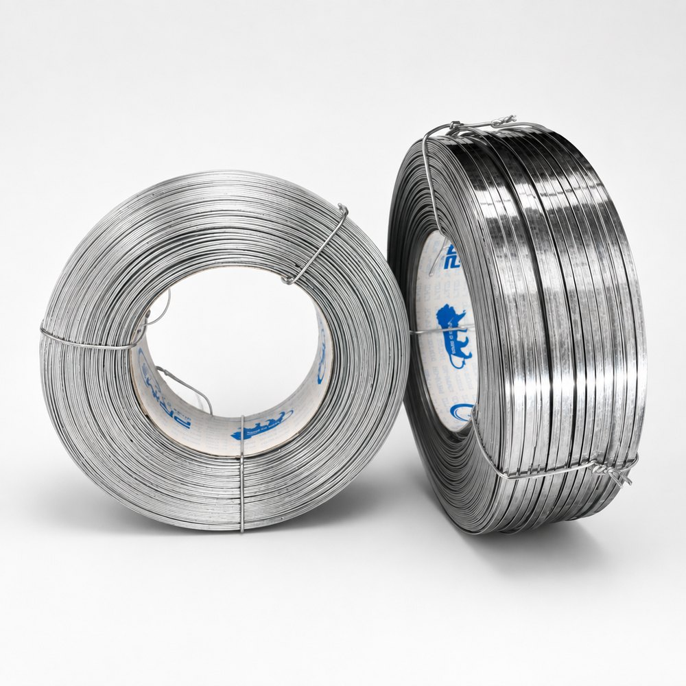
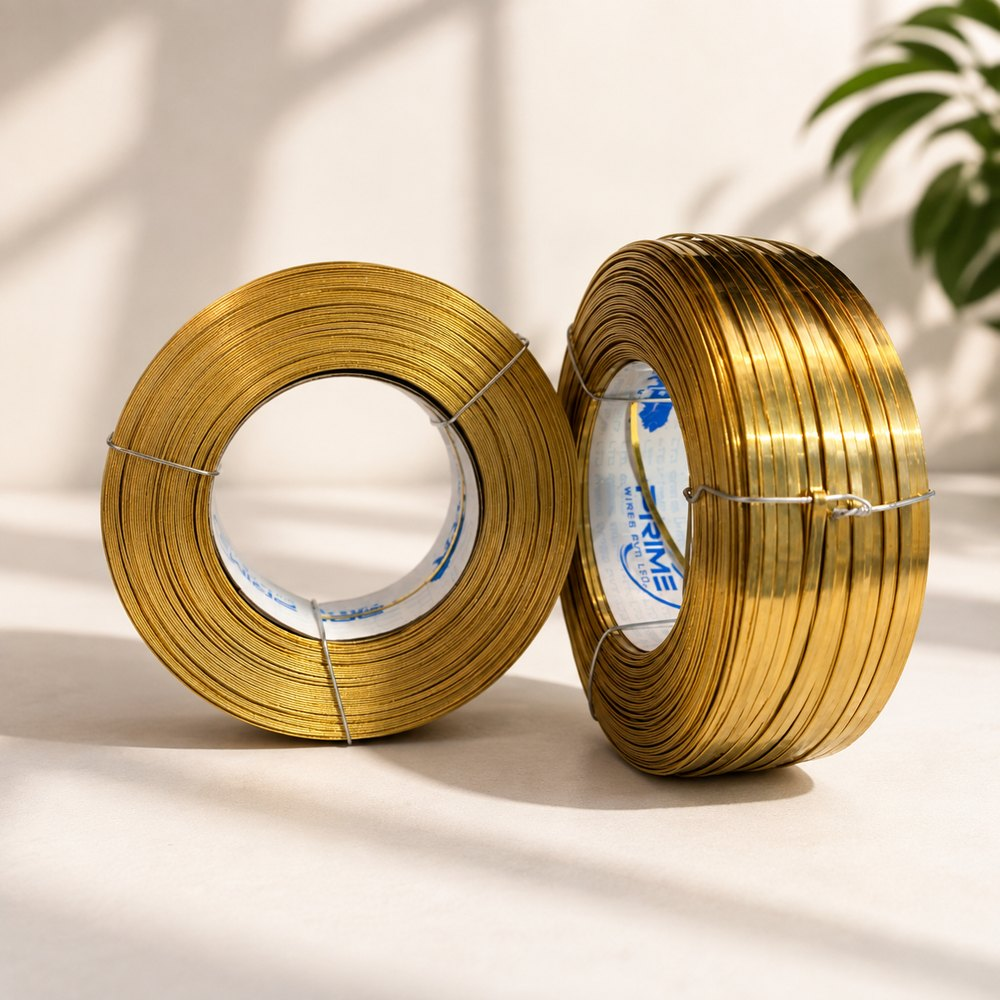

G.I. vs brass stitching wire, costed properly.
Brass costs about seven times what galvanised costs per kilogram. That is where most of these conversations stop. It is the wrong unit — nobody buys a kilogram of stitches.
Galvanised stitching wire is mild steel with a zinc coating, so it can rust once that coating is worn or scratched. Brass stitching wire is solid copper-zinc alloy with no steel in it, so it cannot rust at all. Brass costs roughly seven times more per kilogram — but on a typical eight-stitch corrugated carton at 23 gauge, that is a difference of about ₹1.71 per carton. If rust would cause more than about one carton in twenty-five to be rejected or reworked, brass is the cheaper wire.


The difference is structural, not cosmetic
Galvanised stitching wire begins as low carbon mild steel rod. It is drawn down, annealed, and then passed through an electroplating bath where a layer of zinc is deposited on the surface. That layer is typically 8 to 12 grams per square metre — measured in microns, it is thinner than a sheet of paper. It is then rolled flat and spooled.
The protection is therefore a skin over a vulnerable core. Zinc corrodes sacrificially and buys time, which is real and useful. But the moment that skin is breached — by the cutter, by the former, by abrasion in the guide, by a scratch on the reel — the mild steel underneath is exposed, and mild steel in the presence of moisture and oxygen rusts. Every stitch is, by definition, a wire that has been cut at both ends and bent at three points.
Brass stitching wire has no such geometry. It is drawn from solid copper-zinc alloy, all the way through the section. Cut it, bend it, abrade it, clinch it — every surface you expose is the same alloy as the surface you started with. There is nothing underneath to protect. This is not a better coating; it is the absence of the coating problem.
Side by side
| Property | Galvanised (G.I.) | Pure brass |
|---|---|---|
| Base metal | Low carbon mild steel | Copper–zinc alloy, solid |
| Protection | Electroplated zinc coating | None needed |
| Coating weight | 8–12 g/m² | Not applicable |
| Tensile strength | 700–900 N/mm² | 620–780 N/mm² |
| Density | 7.85 g/cm³ | 8.50 g/cm³ |
| Corrosion behaviour | Rusts once coating is breached | Cannot rust; tarnishes cosmetically |
| Finish | Bright silver | Bright yellow |
| Indicative price | ₹92 / kg | ₹640 / kg |
| Wire per kg at 23 gauge | 126 m | 117 m |
| Cost per stitch (45 mm) | ≈ 3.3 paise | ≈ 24.9 paise |
Prices are indicative index figures and move with the metal market. Run live numbers in the cost per pin calculator.
The arithmetic, shown
Take an ordinary double wall carton. 23 gauge flat wire, nominal section 0.63 by 1.60 mm. Eight stitches per carton. Each stitch consumes about 45 mm of wire once you count the crown, both legs and the clinch. Carton value, ₹42.
Cross-sectional area is 0.63 × 1.60 = 1.008 mm². One stitch is 45 mm of that, so 45.36 mm³ of metal. In galvanised at 7.85 g/cm³ that is 0.356 g; in brass at 8.50 g/cm³ it is 0.386 g. Brass is slightly denser, so a brass stitch weighs a little more — the comparison is not being flattered.
At ₹92/kg, a galvanised stitch costs 3.28 paise. At ₹640/kg, a brass stitch costs 24.68 paise. Across eight stitches: ₹0.26 per carton in galvanised, ₹1.97 in brass. The difference is ₹1.71 — the figure the calculator on this site returns for exactly these inputs.
On a ₹42 carton, wire moves from 0.6% of carton value to 4.7%. That is the entire commercial argument, in one line. Everything else is a question about what happens to the carton after it leaves your gate.
The break-even nobody calculates
The upgrade costs ₹1.71 per carton. A rejected carton costs you the carton (₹42), plus the goods inside it if they are damaged or unsaleable, plus the freight already spent, plus the rework, plus — and this is the one that does not appear on any costing sheet — the standing of your plant with that customer.
Ignore all of that except the carton itself. At ₹42 recovered per rejection avoided, the upgrade pays for itself if it prevents rejection of one carton in twenty-five. A 4% rust-related rejection rate is not an unusual number for galvanised-stitched cartons that have spent a monsoon in an uncontrolled godown, or four weeks in a container.
Include the value of the goods and the freight, and the break-even moves into fractions of a percent. This is why multinational packers stopped having the conversation years ago and simply specify brass or copper. They are not paying for premium wire. They are buying out of a category of claim.
So when is galvanised right?
Frequently. This is not an argument that everyone should buy brass — we sell far more galvanised than brass and expect to continue doing so. It is an argument for costing the decision per carton instead of per kilogram.
If you sit between the two — humid but not coastal, stocked for a season but not exported — the honest answer is usually rust resistant or Power G.I. stitching wire: the same steel core with two to four times the zinc, at a fraction of the brass premium. That middle rung is where most of this industry should be sitting and is not.
Also asked.
Is brass stitching wire worth the extra cost?
It depends almost entirely on the value of the carton and where it is going. On a 42 rupee carton with eight stitches at 23 gauge, galvanised wire costs roughly 26 paise per carton and brass roughly 1 rupee 97 paise. The difference is about 1 rupee 71 paise, or a little over four percent of the carton value. If rust would cause even one carton in twenty-five to be rejected, brass pays for itself. On a low-value carton opened next week, it does not.
Does brass stitching wire rust?
No. Brass stitching wire is drawn from solid copper-zinc alloy and contains no mild steel anywhere in its cross section. There is no ferrous substrate to corrode and no coating to wear through. It will tarnish over long periods, which is a surface oxide and cosmetic, but it does not form the red iron oxide that stains and weakens a carton.
Is brass stitching wire stronger than galvanised?
No, and it does not need to be. Galvanised stitching wire runs 700 to 900 N/mm² tensile; brass runs 620 to 780. Stitching does not load the wire anywhere near its tensile limit — the wire is being formed and clinched, not carrying the weight of the box. What matters in a stitch is consistent section and clean forming, both of which brass does well.
Which is better for export cartons, galvanised or brass?
Brass, in almost every case. A container crossing the equator goes through repeated condensation cycles as it heats and cools, and moisture settles on the coldest metal inside it. Galvanised stitches are frequently the first thing to show rust, and the claim arrives three to four months after the shipment left, long after the wire saving was booked.